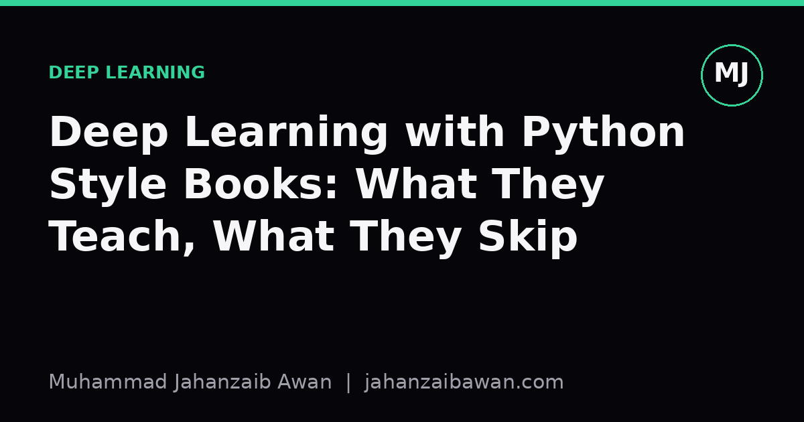

Deep Learning with Python Style Books: What They Teach, What They Skip
These books are excellent at building intuition for how neural networks work. They are far less useful for the messier job of proving a model actually works.

Why these books work so well
If you want to understand what a convolutional layer actually does, or why an embedding turns a word into something a network can reason about, a good hands-on Python deep learning book is still the fastest route there. The format is deliberately narrow: pick a framework, pick a handful of canonical problems such as image classification or sentiment analysis, and walk through them end to end with runnable code. That narrowness is a feature. It means you build a mental model of forward passes, loss surfaces, and gradient descent by watching numbers change on your own screen, not by reading equations in isolation.
I remember the first time I trained a small convolutional network on a classic image dataset and watched validation accuracy climb from around 40 percent after one epoch to the high 80s after a dozen. The book I was working through did not just show the final number; it showed what happened when I removed dropout, or shrank the training set, or swapped in a different optimiser. Accuracy dropped, overfitting appeared, training became unstable. That kind of guided experimentation teaches something textbooks full of derivatives rarely manage: an intuition for how architectural choices actually behave under pressure.
These books are also honest about the basics in a way that pays off later. They tend to spend real time on tensors, shapes, and broadcasting, which sounds tedious until you are three hours into debugging a shape mismatch in your own project. They explain why you normalise inputs, why batch size interacts with learning rate, why a sigmoid output needs binary cross entropy rather than mean squared error. None of this is glamorous, but it is the scaffolding that lets you read a research paper's architecture diagram and actually imagine the code behind it.
What gets quietly skipped: evaluation
Here is where I think the genre has a consistent blind spot. Most worked examples use a single train, validation, and test split that is already clean, already shuffled, and already free of the duplication or temporal structure that real datasets carry. The book shows you a test accuracy of 91 percent and moves on. What it rarely shows you is what happens when that same split methodology is applied to data where some duplication exists between train and test, or where the test set was collected at a different time than the training set.
Consider a worked example I think about often: a model trained to classify product reviews as positive or negative, built from reviews scraped over a two year window. If you shuffle everything randomly before splitting, you can get a test accuracy that looks stable, say somewhere around 89 to 92 percent. But if instead you split by time, training on the first eighteen months and testing on the final six, that number can drop by several points, sometimes more, because vocabulary shifts, product lines change, and the model was quietly memorising patterns tied to a period rather than to sentiment itself. A book built around a single clean split will never surface this, because the dataset it ships with has already had the mess removed.
This matters because leakage is not an edge case, it is the default failure mode of applied machine learning. Duplicate rows across splits, features computed using information from the future, identifiers that correlate with the label for reasons unrelated to the task: these show up constantly in real projects and almost never in textbook datasets. A reader who has only ever trained on pre-cleaned, randomly split data can walk away thinking a 90 percent test score is a fact about the model, when it is really a fact about the split.
Baselines, uncertainty, and the parts that come after chapter one
A second gap is the treatment of baselines. Most books jump fairly quickly to the neural network, because that is the point of the book, and compare it against nothing, or against a trivial majority-class guess. That framing makes every result look impressive by default. In practice, a well-tuned logistic regression with sensible features, or a gradient boosted tree, often gets within a few points of a deep network on tabular or small text problems, sometimes beating it outright, and trains in a fraction of the time. Skipping that comparison means readers never learn to ask the single most useful question in applied modelling: compared with what?
There is also the question of uncertainty. A test accuracy of 87 percent reported from one run on one split tells you almost nothing about whether that number would hold up on a fresh sample of data. Run the same training procedure five times with different random seeds and you might see results ranging from 84 to 89 percent purely from initialisation and shuffling noise. Books rarely show this spread, because showing it would complicate the clean narrative of each chapter, but it is exactly the kind of variability that matters once you are deciding whether a model is actually ready to be used by someone else.
Finally, these books generally stop at the point where a model achieves a good number on a held-out set. What comes after, monitoring for drift once the model is deployed, deciding how often to retrain, handling the case where the input distribution shifts six months later, is left for later, almost by definition, because it falls outside the scope of a book about building models rather than operating them. That is a reasonable editorial choice, but it means the reader finishes the book with a working mental model of training and a much thinner one of validation.
A practical way to close the gap
None of this is a case against these books. They remain the best on-ramp into the mechanics of deep learning, and the intuition they build is genuinely transferable. The fix is not a different book, it is a different habit once you start your own project. Before trusting any reported accuracy, ask how the split was made and whether anything could have leaked across it. Before accepting a neural network's result, spend an afternoon fitting the simplest reasonable baseline and see how close it gets. Before calling a number final, rerun the experiment with a different seed and see how much it moves.
That discipline costs very little time and saves a great deal of embarrassment later. The books teach you how to build the engine. Evaluation rigour is what tells you whether the car actually goes anywhere, and that part, deliberately or not, is usually left for the reader to learn the hard way.